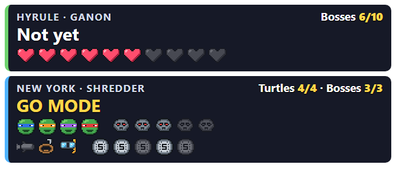
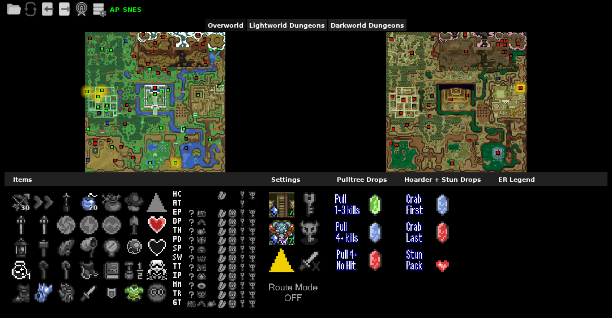
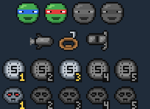
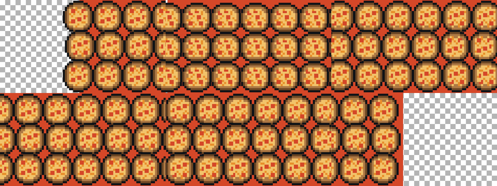

TMNT
TMNT Stream
An OBS scene collection with three scenes, a live go mode panel for both games and a pizza-wipe transition for the "portal" between Hyrule and New York.
Scenes
Import tools\obs\tmnt-alttp-scenes.json (Scene Collection → Import; build it first with
tools\make_obs_collection.py). It holds three 1920×1080 scenes:
| Scene | Shows |
|---|---|
| Hyrule | The ALttP BizHawk window, the ALttP PopTracker, the go mode panel. |
| Kloak (övergång) | A sewer-green interlude with the caption "Into the sewers...", the panel and both trackers. Use it between the games. |
| New York | The TMNT BizHawk window, the TMNT PopTracker, the go mode panel. |


The window captures look for the fixed titles alttp-stream [SNES] - BizHawk,
tmnt-stream [NES] - BizHawk and the two PopTracker titles. The start script gives the windows those
titles, so the captures work for every seed. Check the crop of BizHawk's menu and status bar
(top 21 px, bottom 22 px) once on the stream PC.
OBS follows the game
tools\game_swap.py (started by the start script) switches OBS to Hyrule or New York whenever that
game's window comes to the front, after a Select+Start swap, Ctrl+Shift+Space, Alt+Tab or a click
(Play). It talks to OBS's WebSocket server, which is off until you turn it on once:
Tools → WebSocket Server Settings → Enable WebSocket server. The port and password are read from OBS's settings
on the same PC, so there is nothing to copy. It only switches while OBS shows Hyrule or New York; Kloak and any
scene of the host's own are left alone. To switch scenes by hand only, start with -NoObsSwitch.
Go mode panel

A browser source (tools\obs\go-mode.html) that connects to the server as a read-only tracker for both
slots. URL parameters:
| Parameter | Default | Meaning |
|---|---|---|
server | ws://localhost:38281 | Archipelago server |
alttp, tmnt | (none) | Slot names, here Link and Turtles |
password | (none) | Server password, if any |
layout | row | column stacks the two cards |
demo | off | demo=1 shows fake data without a server |
Hyrule shows the ten dungeon bosses as hearts and "DONE ✔" once Ganon is beaten. New York shows the turtles, packs, passes, the Area bosses (3 needed) and "GO MODE" when the Technodrome is in logic. ALttP's crystals are not counted: they are shuffled between dungeons and have no item IDs.
Trackers


For the runner, Universal Tracker can also list the TMNT locations that are in logic (Archipelago Launcher →
Universal Tracker, connect as Turtles).
Pizza-wipe

tools\obs\pizza_wipe.webm (1 s, 1920×1080, transparent) is the collection's default transition,
a Stinger with its transition point at 500 ms. Rebuild it with tools\make_stinger.py.
Before going live
- Start OBS, then
start.cmd→ 2 Start a session (Play). It ends with the check; run 3 Check before going live again until every line is OK. - In OBS pick the TMNT x ALttP collection and check that both games and both trackers show.
- Close BizHawk's "Click the blue silhouette below for onboarding" line once; it shows in the capture.
- Check that both trackers and the panel say they are connected (no "No server").
- Switch Hyrule → Kloak → New York once to see the pizza-wipe.
- Press Select+Start in each game: the other game comes to the front and OBS follows. The game swap window says "connected to OBS".
- Keep the server console window handy for
/hintand/send.
About the art
The TMNT icons, hearts, pizza and the pizza-wipe are drawn for this project in tools\sprites.py; no
game sprites or fan art are used for them.
A Link to the Past is shown the usual way, with the community PopTracker pack's icons, as the ALttP community and event organisers expect.